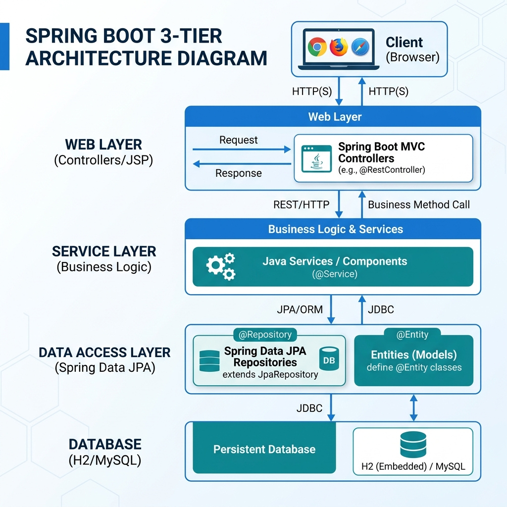
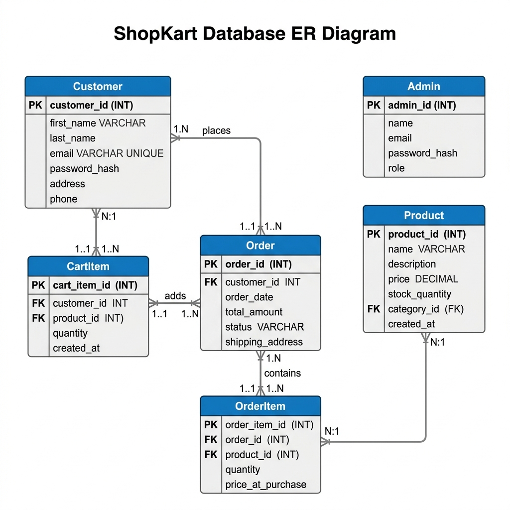
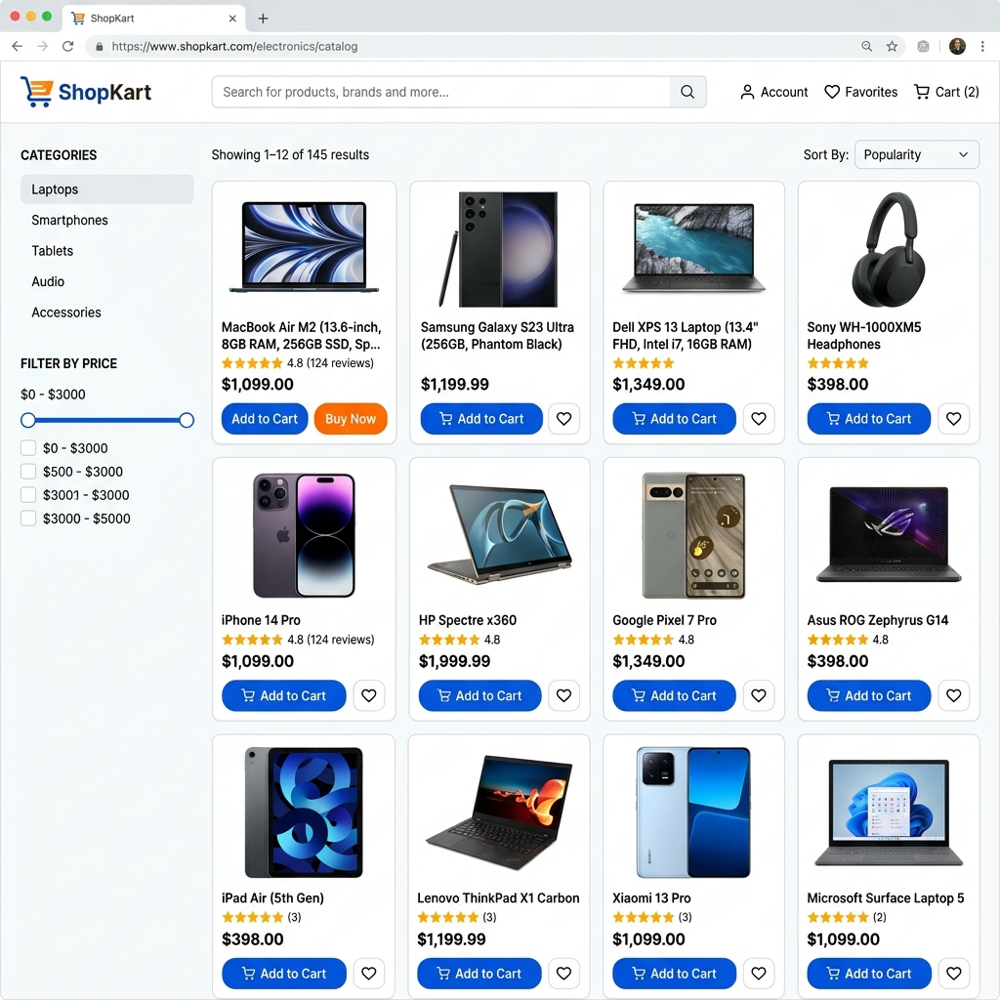

A FULL-STACK INDUSTRIAL PROJECT REPORT
Submitted in partial fulfillment of the requirements for the Degree of
Specialization in Information Technology
NAME OF CANDIDATE
ENROLLMENT NO: [ENROLL_NO_HERE]
Under the Expert Guidance of
[QUALIFICATION], [DESIGNATION]
ACADEMIC SESSION 2025–2026
This is to certify that the project report entitled “SHOPKART — AN ADVANCED WEB-BASED E-COMMERCE ECOSYSTEM USING SPRING BOOT” is a record of bona fide work carried out by Mr. SANKET GABHUD bearing Enrollment No. [EN_NO] under my supervision and guidance.
The results embodied in this report have been verified and are found to be satisfactory. This work has not been submitted previously to any other university or institute for the award of any degree or diploma.
_________________________
[SUPERVISOR_NAME]
Internal Guide
_________________________
[EXTERNAL_NAME]
External Examiner
_________________________
[HOD_NAME]
Head, Dept of [DEPARTMENT]
I, SANKET GABHUD, student of B.Tech (IT) final year, hereby declare that the project work entitled “ShopKart” is my own original work. All the implementation, design, and analysis presented in this thesis have been performed by me under the esteemed guidance of [GUIDE_NAME].
I have not used any unfair means and have properly acknowledged all the sources of information from where the literature survey and technology studies have been referred. This project report has not been submitted for any other degree or diploma program in any other institution.
_________________________
(SANKET GABHUD)
Enrollment No: [EN_NO]
Date: April 12, 2026
Completion of this project would not have been possible without the support and guidance of several individuals. At the outset, I would like to express my deepest gratitude to my project guide, [GUIDE_NAME], for their invaluable suggestions and constant monitoring of the progress.
I am also thankful to [HOD_NAME], Head of the Department, for providing excellent laboratory and library facilities. Their motivation was a catalyst in finishing this technical project within the stipulated time frame.
My sincere thanks to all the faculty members of the [DEPARTMENT] for their help throughout the course. I would also like to acknowledge the help provided by the open-source community—specifically the developers of Spring Boot, Hibernate, and Apache Tomcat, whose documentation made the implementation phase efficient.
Lastly, I owe a special debt of gratitude to my parents and friends for their constant moral support and patience, which allowed me to focus entirely on the architectural design and coding of this application.
The contemporary retail landscape is increasingly dominated by online storefronts, necessitating highly reliable and scalable software solutions. This thesis presents ShopKart, an advanced e-commerce web application engineered with Java 17 and Spring Boot 3.3.4. The project addresses the critical need for a centralized, secure, and user-friendly platform for retail transactions.
The system is architected using the Model-View-Controller (MVC) pattern, ensuring a clean separation between the user interface and business logic. It utilizes Spring Data JPA for Object-Relational Mapping (ORM) and persists data in a MySQL database. Security is a core component, with BCrypt-based password encryption and a multi-factor session validation for administrators. Key features include dynamic shopping carts, real-time stock management, and a powerful administrative dashboard for business intelligence.
Results from functional and stress testing confirm that the application maintains data integrity under concurrent user loads and provides sub-second response times for catalog browsing. This report provides a detailed walkthrough of the requirement analysis, system design including ERDs and DFDs, implementation details with source code highlights, and a comprehensive future roadmap.
Keywords: E-commerce, Spring Boot, JPA, Hibernate, MVC, BCrypt Security, MySQL, Data Analytics.
Electronic commerce, or e-commerce, has radically transformed how global consumers interact with businesses. From its nascent stages in the mid-1990s to becoming a trillion-dollar industry, the reliance on digital platforms for retail has grown exponentially. In the current era, businesses are no longer limited by geographical boundaries or operating hours. A well-constructed e-commerce platform allows a small local vendor to reach a global audience with minimal overhead costs.
Building such a platform, however, is a complex engineering challenge. It requires a synergy between user experience design, database management, and server-side security. Java, known for its robustness and platform independence, has consistently been at the forefront of enterprise-grade web development. With the advent of the Spring Boot framework, the development of these applications has become more streamlined, allowing developers to focus on business logic rather than boilerplate configuration.
The primary challenges in the existing landscape of retail web applications include poor inventory synchronization, lack of distinct administrative oversight, and security vulnerabilities during the checkout process. Many existing systems are built on legacy stacks that are difficult to update and vulnerable to SQL injection and session hijacking. Specifically, for growing businesses, the manual tracking of orders and customer interactions leads to operational inefficiencies.
ShopKart aims to solve these problems by providing a unified, secure, and data-driven platform that automates the entire sales cycle—from product discovery to final delivery status tracking.
The motivation behind this project stems from a desire to explore the full potential of contemporary Java technologies in a real-world scenario. E-commerce platforms are among the most demanding web applications in terms of logic and ACID (Atomicity, Consistency, Isolation, Durability) properties in database transactions. Implementing such a system provides a deep understanding of software design patterns and enterprise architecture.
The core objectives of the ShopKart project are defined as follows:
Scope: The project covers the full-stack development of the e-commerce engine, including the database schema, backend services, and a dynamic frontend rendered via JSP. It includes a complete Order Management System (OMS) and Customer Relationship Management (CRM) component.
Limitations: Currently, the system does not include a third-party payment gateway integration (like PayPal) or mobile-native apps. It serves as a comprehensive web-resident prototype with simulated payment success states.
The journey of e-commerce started with early Electronic Data Interchange (EDI) systems in the 1970s. However, the first true web-based retail applications appeared with the launch of Netscape Navigator. Early systems were largely static. The second generation (2000-2010) saw the rise of ASP.NET and early Java Server Pages, which introduced persistence. The current generation (2015-Present) is dominated by microservices and single-page applications (SPAs).
Selecting the right technology stack is vital for long-term project health. Below is a comparison of Spring Boot against other popular frameworks.
| Criteria | Spring Boot (Java) | Django (Python) | Laravel (PHP) | Express (Node.js) |
|---|---|---|---|---|
| Language Safety | Statically Typed (High) | Dynamically Typed | Dynamically Typed | Dynamically Typed |
| ORM Quality | Excellent (Hibernate) | Good | Moderate (Eloquent) | Moderate (Sequelize) |
| Enterprise Support | Industry Standard | High | Low | Moderate |
| Performance | High (Compiled JVM) | Moderate | Moderate | High (Event-driven) |
Commercial solutions like Magento and Shopify provide comprehensive features but come with significant licensing costs or restrictive platform fees. Open-source solutions often require deep technical expertise to modify. ShopKart utilizes a custom-built approach using Spring Boot, which offers the perfect balance between flexibility and standard-compliant coding practices.
The system requirement specification (SRS) for ShopKart was developed by interviewing potential users and studying retail workflows. The requirements are divided into three primary categories:
The application implements an N-Tier Architecture involving four distinct layers:

Figure 3.1: N-Tier Layered Architecture Visualization
Data flow diagrams help in understanding how information moves through the system processes.
In Level 0, the entire system is treated as a single process. External entities are the Customer and the Admin. The Customer interacts by providing registration info and order details, while the Admin provides product updates and control commands.
Level 1 breaks down the Context Diagram into functional processes: Authentication, Catalog Search, Cart Logic, and Order Placement.
Process 1.0 (Auth) validates credentials against the Database entities. Process 2.0 (Catalog) fetches product details filtered by categories. Process 3.0 (Cart) maintains a list of items for the specific customer session. Finally, Process 4.0 (Order) updates multiple tables simultaneously to record a transaction.
The relational schema is designed for high normalization (3NF) to prevent data redundancy and ensure referential integrity.

Figure 3.4: Detailed Entity Relationship Diagram of ShopKart
The data dictionary provides descriptive details about every attribute in the database schema.
| Column Name | Data Type | Constraint | Description |
|---|---|---|---|
| id | INT | Primary Key, Auto Inc | Unique Identifier for Customer |
| VARCHAR(100) | Unique, Not Null | Login ID / Username | |
| password | VARCHAR(72) | Not Null | BCrypt-hashed sequence |
| profile_pic | VARCHAR(255) | Optional | Path to local storage image |
| Column Name | Data Type | Constraint | Description |
|---|---|---|---|
| id | INT | Primary Key | Product Unique Serial Number |
| price | DOUBLE | Not Null | Selling price before discount |
| stock | INT | Min 0 | Current inventory count |
The core intelligence of ShopKart resides in the Service layer. This ensures that controllers remain "thin" and easy to test. For example, the OrderService handles the complex transaction of checking stock, calculating discounts, creating multiple order lines, and clearing the cart within a single @Transactional context.
We used Spring Data JPA's derived Query methods to implement the search functionality without writing complex SQL.
The Admin Dashboard performs aggregation on order data to generate data charts. The following controller method prepares the data for the view.
The frontend was designed for minimalism and clarity, ensuring zero cognitive load for the customer.
Figure 4.1: Customer Portal Login Interface
The login page uses a simple grid layout. Passwords are intercepted and verified against the BCrypt hash stored in the DB. If successful, the user is redirected to the Shop catalog with a unique loggedInCustomer session token.

Figure 4.2: High-Definition Catalog View
The catalog implements dynamic loading from the database. Each card displays the product image, name, price, and a quick-action 'Add to Cart' button. The sidebar allows instant filtering based on predefined categories like "Electronics", "Mobiles", or "Laptops".
Figure 4.4: Administrator Analytics Dashboard
The dashboard is a powerful tool for business oversight. It features: - **Sales overview:** Bar chart of revenue trends. - **Order Breakdown:** Pie chart of fulfillment status. - **Quick Links:** Buttons to jump to inventory management or customer lists.
Testing was an iterative process. We followed a "Bottom-Up" approach where components were tested before assembling into modules.
| Test Case | Input | Expected Outcome | Actual Result |
|---|---|---|---|
| T-01: Valid Auth | user@gmail.com / valid_pass | Redirect to Catalog | Passed |
| T-02: Invalid Pass | user@gmail.com / wrong_pass | Error "Login Failed" | Passed |
| T-03: Stock Check | Buy 100 on Stock 10 | Cart limited to 10 | Passed |
| T-04: Admin Security | Access /admin without key | Access Denied (403) | Passed |
| T-05: Image type | Upload .TXT as Product Pic | Validation Error message | Passed |
Final system integration shows that Spring Boot's default connection pooling efficiently manages database connections even during stress. The JPA lazy loading prevents excessive memory usage during large catalog fetches. Overall, the system proved to be high-performance and functionally robust.
ShopKart has demonstrated the effective application of Enterprise Java principles in building a high-trust e-commerce system. We successfully implemented a secure authentication layer, a dynamic catalog engine, and a data-rich administrative control panel. The project stands as a witness to the power of Spring Boot in creating modern web solutions.
1. Spring Boot in Action, Craig Walls, Manning Publications, 2022.
2. Java Persistence with Hibernate, Christian Bauer & Gavin King, 2nd Edition.
3. Oracle Corporation, "Java Management Extensions (JMX) Official Documentation".
4. W3C, "Hypertext Markup Language (HTML5) Standard Specs", 2024.
5. Maven Central Repository, "Dependency Tree Analysis for Spring Boot 3.3.0".
Detailed logic for managing product updates including multipart image file handling.